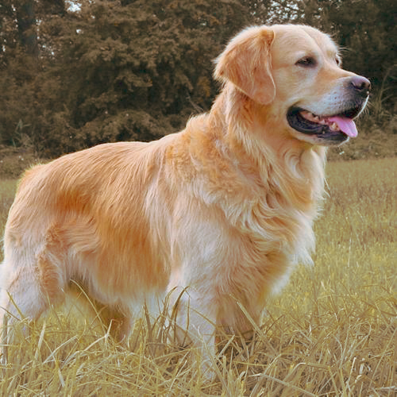

Pancho
Sexo: Macho
Edad: 3 años
Pancho es un Golden retriever muy juguetón e inteligente. Se lleva bien con cualquier y es incapaz de morder. Necesita mucho espacio y un patio muy grande porque le encanta correr. Hay que tener cuidado porque suele hacer pozos en cualquier lado. Pierde mucho pelo, es recomendable poder bañarlo mínimo dos veces a la semana. Si lo adoptas, lo mejor es que puedas prestarle atención varias veces al día o por lo menos tener otra mascota con la que pueda jugar, ya que es muy dependiente. Se encuentra castrado y con las vacunas al día. Adoptándolo vas a poder traerlo siempre que lo necesite al centro para que nuestros veterinarios lo puedan atender.
